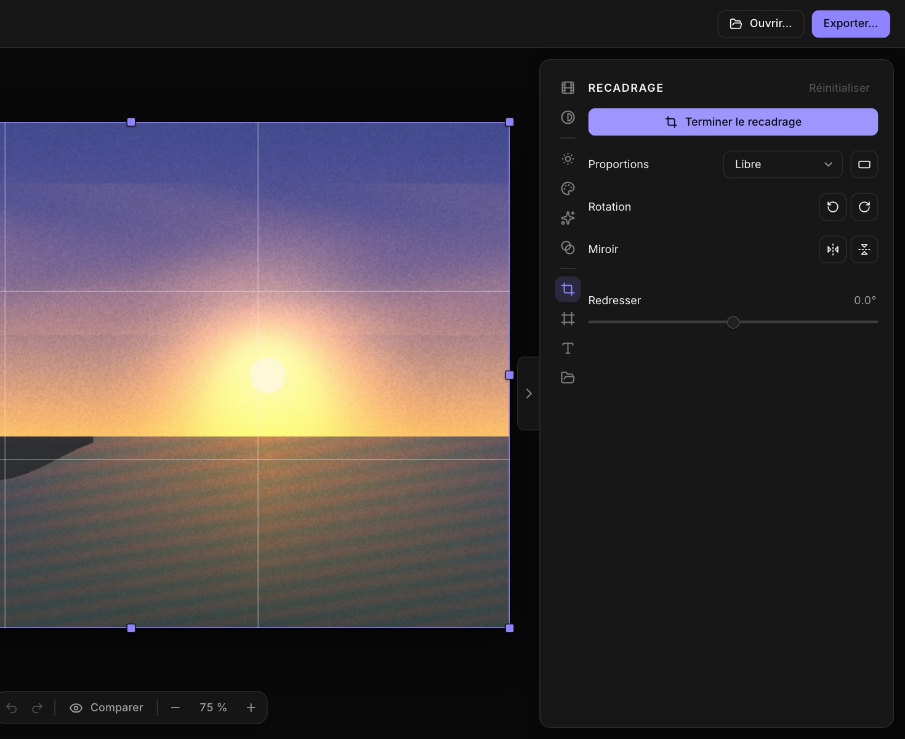
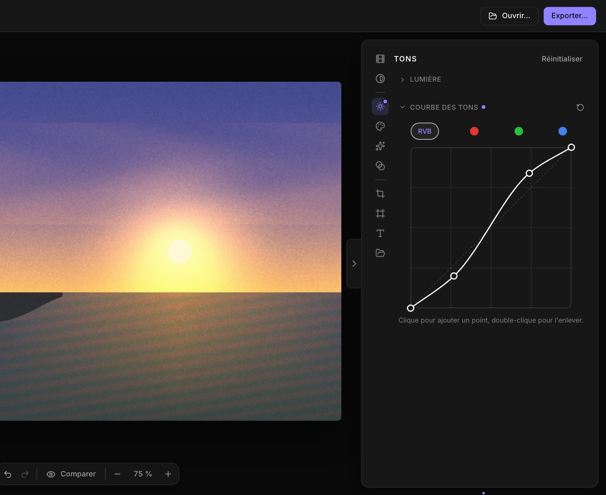
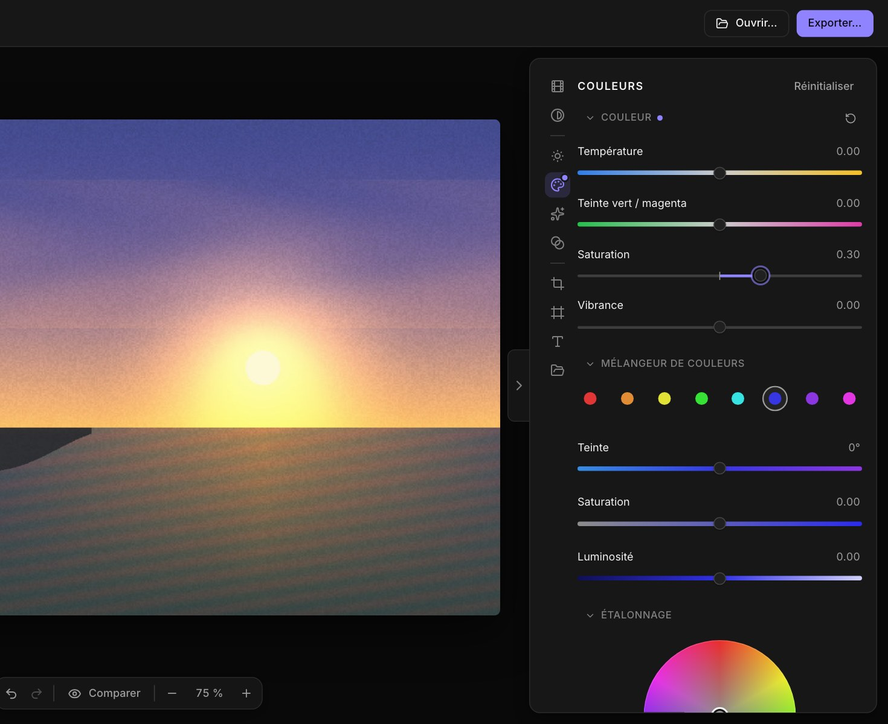
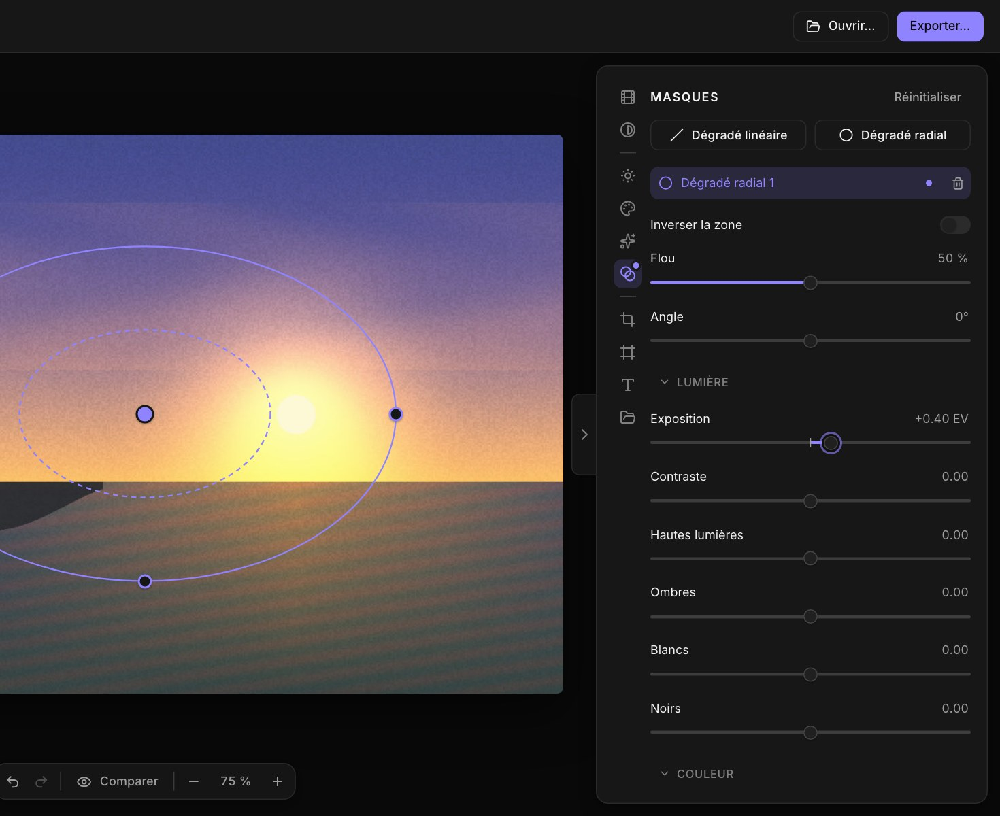

Recadrer et redresser
Des poignées sur la photo, les formats courants, un redressement jusqu'à 45°, quarts de tour et miroirs. Le recadrage part de tes pixels d'origine, jamais de l'aperçu.

Gratuit · Open source · macOS, Windows, Linux
Du grain, de la halation et des couleurs inspirés de la pellicule, puis un cadre assorti : bande 35 mm, tirage instantané, recadrage cinéma. qFilm est une petite application de bureau qui fait une chose et la fait bien, et garde tes photos sur ton ordinateur.
Accès anticipé : les versions publiques arrivent.

Comment ça marche
Dépose un JPEG, un PNG ou un TIFF. Ton original n'est jamais touché.
33 looks inspirés de la pellicule. Règle l'intensité, puis affine.
Une bande pellicule, un tirage instantané, un recadrage cinéma, ou le tien, avec une légende que tu déplaces à ta guise.
JPEG, PNG ou TIFF 16 bits, en taille réelle ou réduit, avec l'EXIF d'origine si tu veux.
Looks
Chaque look est construit avec le peu que fait vraiment la pellicule : un épaulement doux dans les hautes lumières, des couleurs qui dérivent dans les ombres, un grain qui s'agglomère, un halo autour des bords clairs. Choisis-en un, règle son intensité, puis fais-le tien.
 OriginalAvec un look
OriginalAvec un look
Fais glisser la poignée, ou utilise les flèches du clavier, pour comparer.


Cadres
Une bande pellicule avec ses inscriptions de bord. Un tirage instantané avec sa marge blanche. Un recadrage cinéma. Les cadres distinguent qFilm, et ils ne sont pas figés : un cadre est un SVG et un petit manifeste, tu peux donc dessiner le tien et l'importer.


Un cadre est un dossier avec un manifeste et un SVG. Dessine-le dans Figma, importe-le en .zip, en dossier ou par glisser-déposer, et ses réglages apparaissent dans l'application.
Outils
Pas de catalogue, pas de cloud, pas soixante curseurs. Un jeu d'outils précis, pensé pour rester rapide sur les gros fichiers.
Des poignées sur la photo, les formats courants, un redressement jusqu'à 45°, quarts de tour et miroirs. Le recadrage part de tes pixels d'origine, jamais de l'aperçu.

Des points libres, RVB ou par canal, sur une courbe douce qui ne dépasse jamais. Tire sur le graphique ; un double-clic retire un point.

Huit teintes pour la teinte, la saturation et la luminosité. Retire la couleur et il devient un mélangeur de canaux noir et blanc.

Des dégradés linéaires et radiaux pour la lumière et la couleur locales, avec leurs poignées directement sur la photo.

Confidentialité
Pas de compte, pas d'envoi, pas de mesure d'audience. qFilm ne se connecte jamais à Internet : tes photos restent sur ton disque.
Orientation lue dans l'EXIF, couleurs à gamut large converties plutôt que mal lues, export TIFF 16 bits, EXIF d'origine conservé sur demande.
Un cœur d'imagerie en Rust et une coque native, pas un navigateur embarqué. L'aperçu suit tes curseurs en quelques dizaines de millisecondes.
Télécharger
qFilm est gratuit et open source, sous licence MIT. Pas de compte, pas d'abonnement.
Accès anticipé : les versions publiques ne sont pas encore sorties
qFilm n'est pas encore signé, ton système te demandera donc une confirmation la première fois.
Il te faut Node et Rust 1.88 ou plus récent. Le README détaille chaque système.
git clone https://github.com/D1nker/qfilm.git
cd qfilm
npm install
npm run app:buildQuestions
Oui. qFilm est gratuit et open source, sous licence MIT : utilise-le, modifie-le, partage-le. Pas de compte, pas d'abonnement, pas de publicité.
Non, et il n'essaie pas. Il n'y a ni catalogue ni cloud. qFilm est un studio ciblé pour les looks argentiques, les cadres et les légendes, avec les retouches dont tu as vraiment besoin : courbes, mélangeur de couleurs, étalonnage, masques et recadrage.
Jamais. Tes originaux sont lus et laissés intacts, et les exports vont où tu les envoies. L'application ne se connecte pas du tout à Internet.
Tu peux ouvrir des JPEG, PNG et TIFF, et exporter en JPEG, PNG ou TIFF 16 bits. Les fichiers RAW ne sont pas encore pris en charge. Les photos sont redressées d'après leur orientation EXIF, les fichiers à gamut large (Display P3, Adobe RGB…) sont convertis en sRGB, et l'EXIF d'origine peut être conservé à l'export.
Non. Ce sont des looks originaux, inspirés du comportement de la pellicule (contraste doux, dominantes, grain, halation), avec des noms génériques. Aucun n'utilise un nom de marque ni ne prétend reproduire une émulsion précise.
Oui. Un cadre est un SVG et un petit fichier manifeste. Dessine-le dans Figma ou n'importe quel outil vectoriel, puis importe-le en .zip, en dossier ou par glisser-déposer. Le guide est sur GitHub.
macOS, Windows et Linux. qFilm est construit avec Tauri : c'est une petite application native, pas un navigateur embarqué.
L'application et ce site parlent français et anglais. L'application suit la langue de ton système et tu peux en changer dans les préférences.
Ouvre un ticket sur GitHub. Les looks et les cadres sont de simples fichiers de données : en ajouter un est une bonne première contribution.